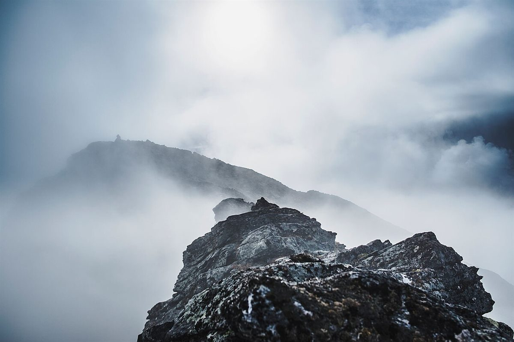
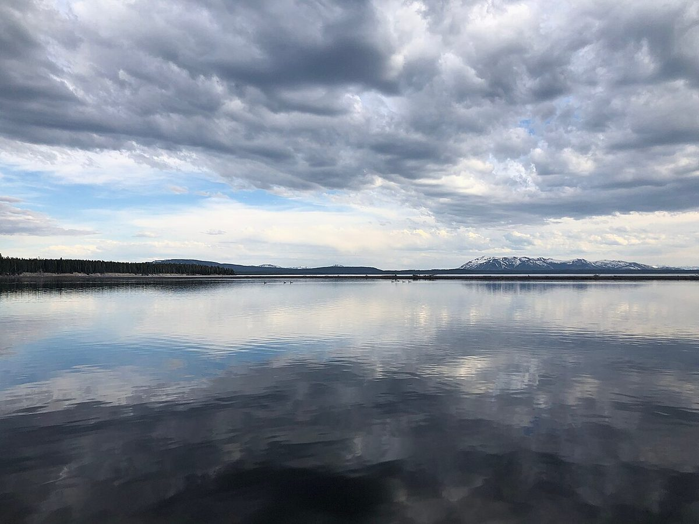

分岐点
店のこと
お店について確認できているのは、所在地とInstagramのアカウントだけです。
このページの「想像してみる」部分は、制作側が想像して書いたものです。お店の実際の様子・考え・メニューとは関係がありません。
確認できていること
- 店名は「NOMAD COFFEE」、業種はカフェ
- 所在地は群馬県吾妻郡嬬恋村西窪44-1(〒377-1525)
- 電話番号はなし。連絡はInstagramから
- 営業時間・定休日・メニュー・価格・ご予約・駐車場は準備中

想像してみる
「ノマド」という名前から
由来は分かりません。制作側は、旅の途中でふと立ち寄って、温かい飲み物でひと息つく場所かもしれない、と想像しました。たとえば分かれ道で地図を広げ、次の行き先を決める間の小さな休憩。そんな時間を思い浮かべています(実際のお店の姿ではありません)。



村のこと
嬬恋村について
お店の所在地は群馬県吾妻郡嬬恋村です。お店の雰囲気や提供内容については、確認できたものだけを載せるため「準備中」としています。